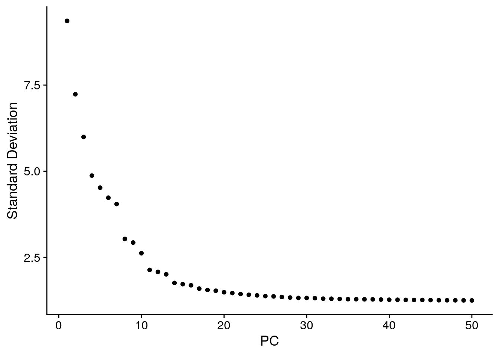
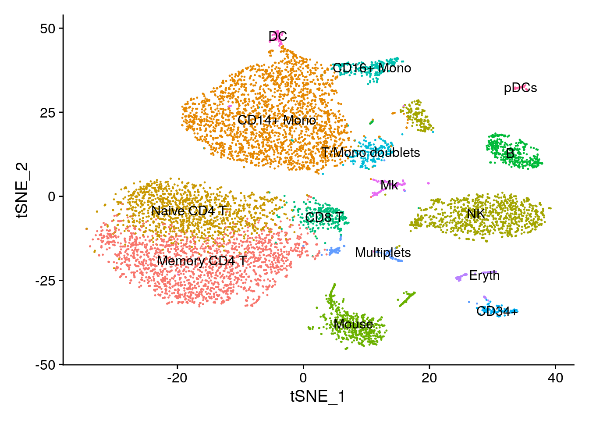
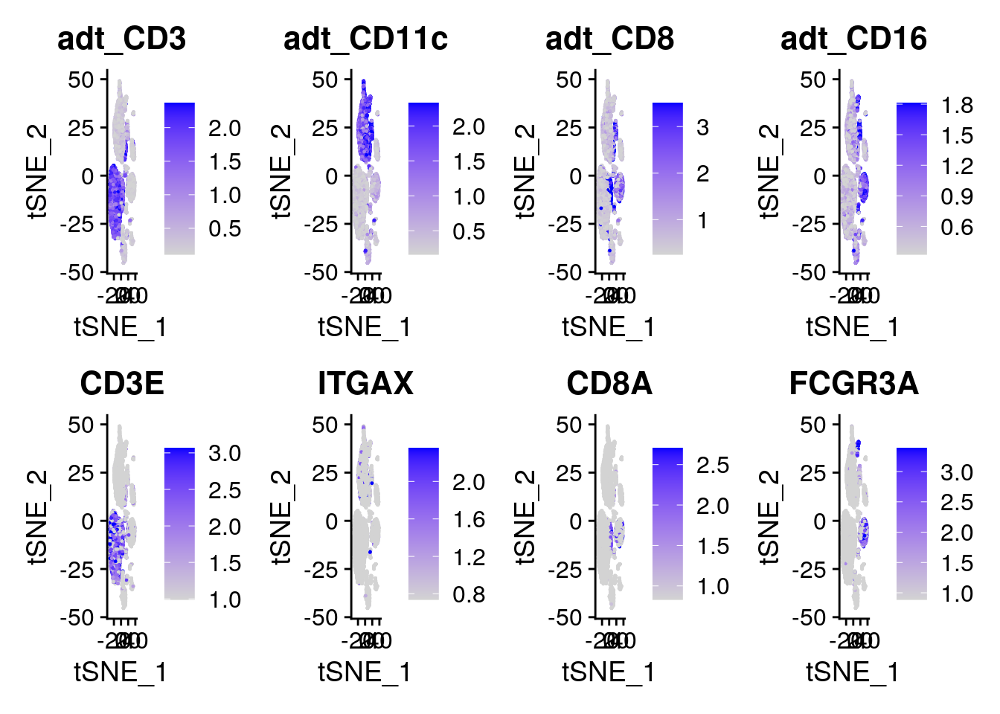
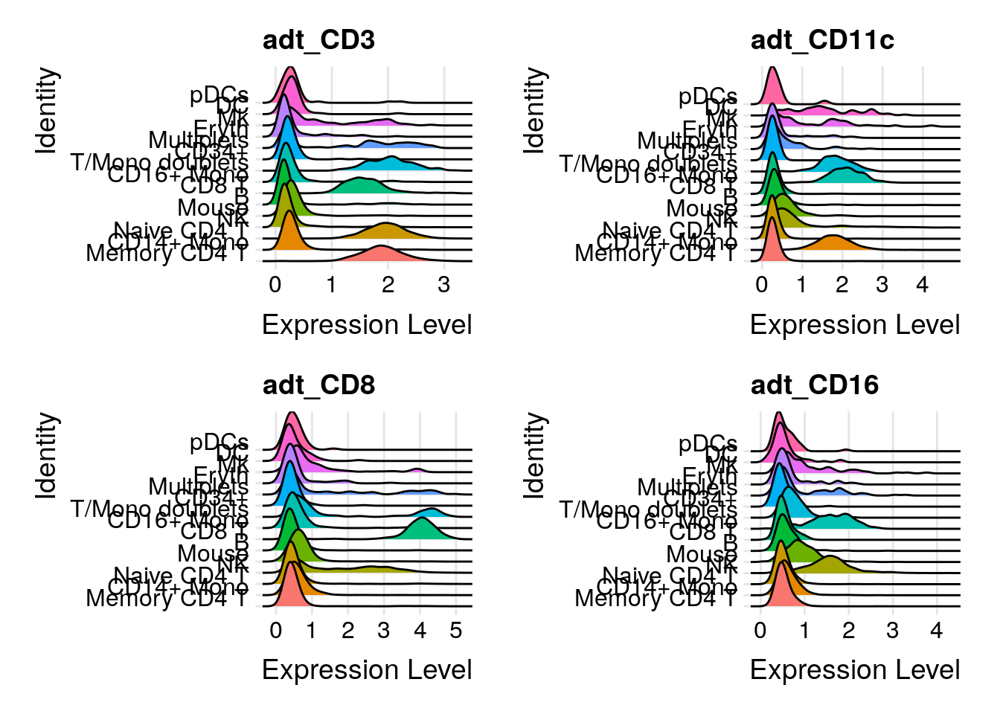
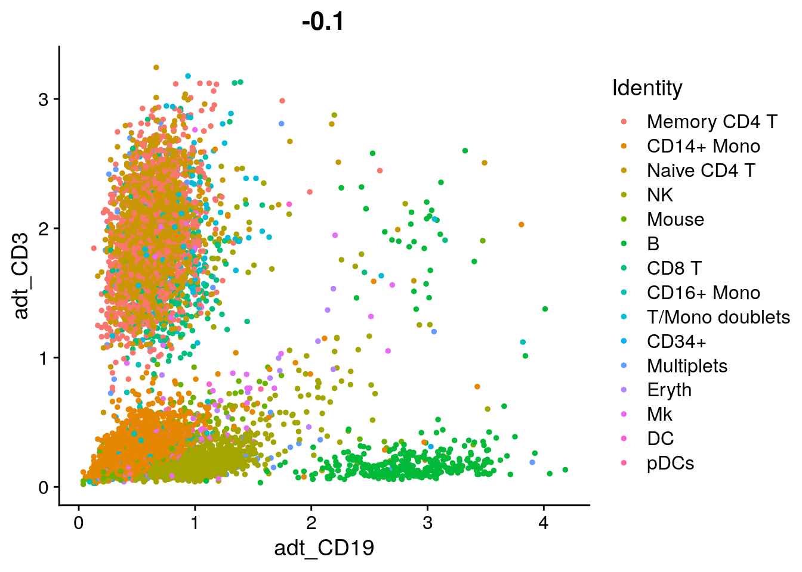
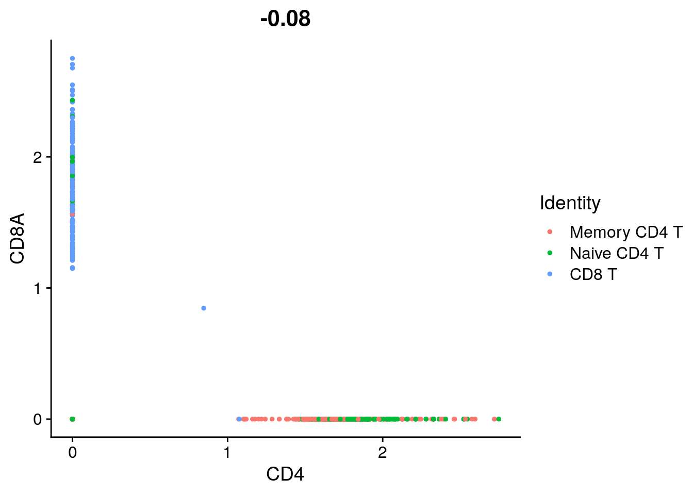
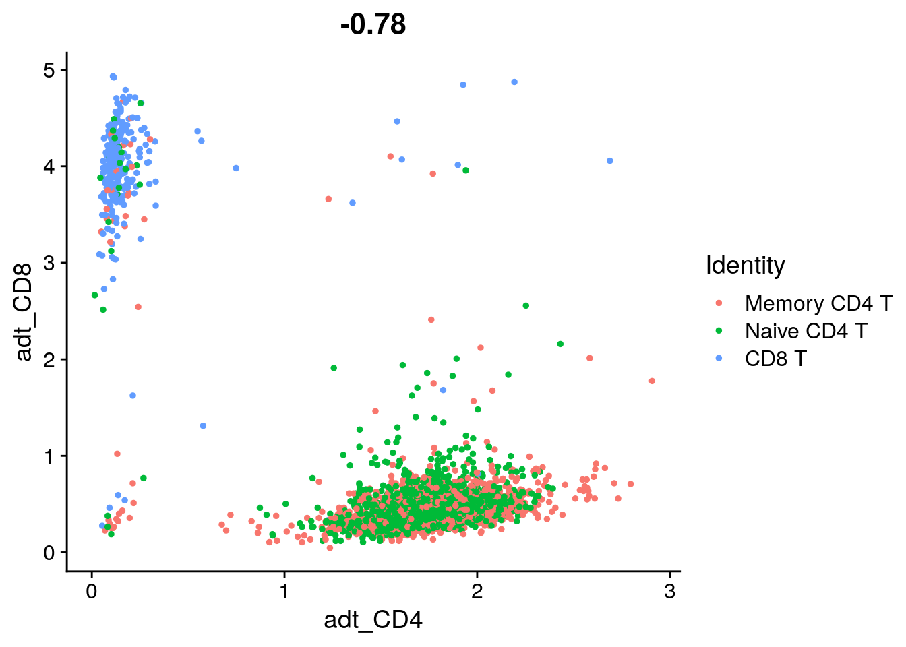
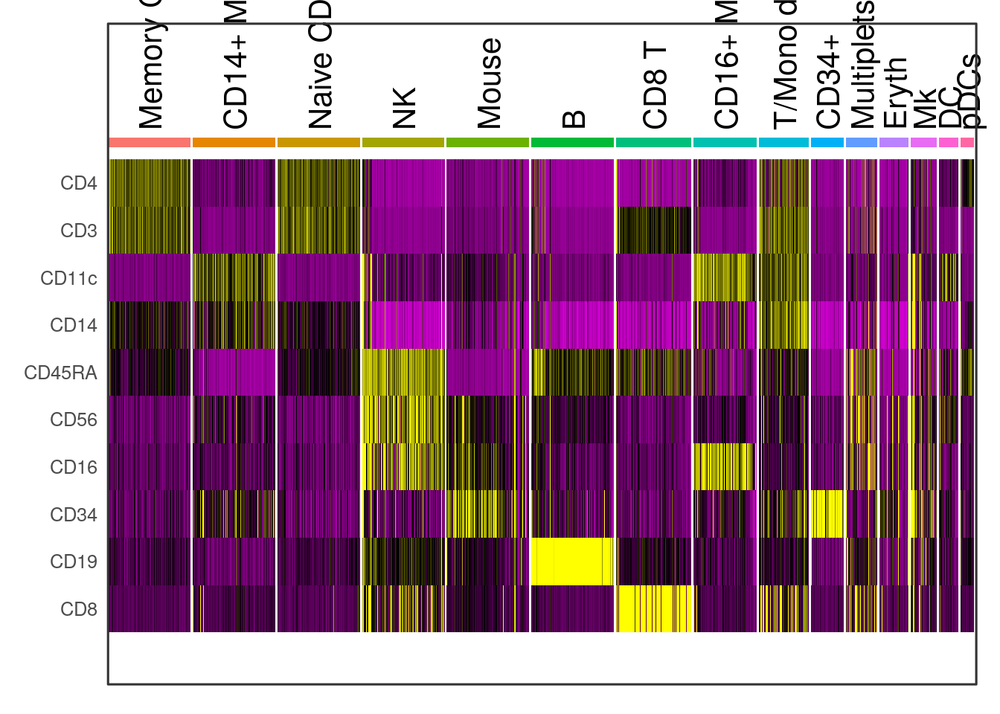

16 CITE-Seq
In this lab, we will look at how single cell RNA-seq and single cell protein expression measurement datasets can be jointly analyzed, as part of a CITE-Seq experiment. To learn more about how the antibody barcode matrix is computationally generated from the sequencing data, please visit CITE-seq-Count. To learn more about CITE-Seq and feature barcoding, please visit the CITE-seq site.
This lab closely follows the official vignette available at Using Seurat with multi-modal data.
16.1 Load settings and packages
knitr::opts_chunk$set(echo = TRUE)
library(Seurat)
library(Matrix)
library(ggplot2)
library(patchwork)
library(dplyr)
library(plyr)
# Set folder location for saving output files. This is also the same location as input data.
mydir <- "data/citeseq/"
setwd("/home/rstudio/materials/")
# Objects to save.
Rda.quickload.path <- paste0(mydir, "citeseq_quickload.Rda") # datasets saved as sparse objects
Rda.RNA.path <- paste0(mydir, "citeseq_RNA.Rda") # cbmc clustered using RNA
Rda.multi.path <- paste0(mydir, "citesq_cbmc_multi.rda") # cbmc clustered and ADT added as an assay
Rda.protein.path <- paste0(mydir, "citeseq_protein.Rda") # cbmc clustered using protein16.2 Load in the data
Here, we analyze a dataset of 8,617 cord blood mononuclear cells (CBMCs), produced with CITE-seq, where we simultaneously measure the single cell transcriptomes alongside the expression of 11 surface proteins, whose levels are quantified with DNA-barcoded antibodies. First, we load in two count matrices : one for the RNA measurements, and one for the antibody-derived tags (ADT).
# Load in the RNA UMI matrix
# Note that this dataset also contains ~5% of mouse cells, which we can use
# as negative controls for the protein measurements. For this reason, the
# gene expression matrix has HUMAN_ or MOUSE_ appended to the beginning of
# each gene.
cbmc.rna <- as.sparse(read.csv(paste0(mydir, "GSE100866_CBMC_8K_13AB_10X-RNA_umi.csv.gz"), sep = ",", header = TRUE, row.names = 1))
cbmc.rna[20400:20403,1:2]
# To make life a bit easier going forward, we're going to discard all but
# the top 100 most highly expressed mouse genes, and remove the 'HUMAN_'
# from the CITE-seq prefix
cbmc.rna <- CollapseSpeciesExpressionMatrix(cbmc.rna, prefix = "HUMAN_", controls = "MOUSE_")
# Load in the ADT UMI matrix
cbmc.adt <- as.sparse(read.csv(paste0(mydir, "GSE100866_CBMC_8K_13AB_10X-ADT_umi.csv.gz"), sep = ",", header = TRUE, row.names = 1))
# When adding multimodal data to Seurat, it's okay to have duplicate feature names. Each set of
# modal data (eg. RNA, ADT, etc.) is stored in its own Assay object. One of these Assay objects
# is called the 'default assay', meaning it's used for all analyses and visualization. To pull
# data from an assay that isn't the default, you can specify a key that's linked to an assay for
# feature pulling. To see all keys for all objects, use the Key function.
# Lastly, we observed poor enrichments for CCR5, CCR7, and CD10 - and therefore
# remove them from the matrix (optional)
cbmc.adt <- cbmc.adt[setdiff(rownames(x = cbmc.adt), c("CCR5", "CCR7", "CD10")), ]
# Look at structure of ADT matrix.
cbmc.adt[1:10,1:3]
# What fraction of cells in the ADT and RNA matrix overlap?
length(intersect(colnames(cbmc.rna), colnames(cbmc.adt))) / length(union(colnames(cbmc.rna), colnames(cbmc.adt)))
# Save current progress.
save(cbmc.rna, cbmc.adt, file = Rda.quickload.path)16.3 Setup a Seurat object, and cluster cells based on RNA expression
The steps below represent a quick clustering of the PBMCs based on the scRNA-seq data. For more detail on individual steps or more advanced options, see our PBMC clustering guided tutorial here
## Warning: Feature names cannot have underscores ('_'), replacing with dashes
## ('-')# This code sub-samples the data in order to speed up calculations and not use too much memory.
# Idents(cbmc) <- "orig.ident"
# cbmc <- subset(cbmc, downsample = 2000, seed = 1)
# cbmc.adt <- cbmc.adt[, colnames(cbmc)]
# standard log-normalization
cbmc <- NormalizeData(cbmc)
# choose ~1k variable features
cbmc <- FindVariableFeatures(cbmc)
# standard scaling (no regression)
cbmc <- ScaleData(cbmc)## Centering and scaling data matrix# Run PCA, select PCs for tSNE visualization and graph-based clustering
cbmc <- RunPCA(cbmc, verbose = FALSE)
ElbowPlot(cbmc, ndims = 50)
# Cluster the cells using the first 25 principal components.
cbmc <- FindNeighbors(cbmc, dims = 1:25)## Computing nearest neighbor graph## Computing SNN## Modularity Optimizer version 1.3.0 by Ludo Waltman and Nees Jan van Eck
##
## Number of nodes: 8617
## Number of edges: 347548
##
## Running Louvain algorithm...
## Maximum modularity in 10 random starts: 0.8592
## Number of communities: 19
## Elapsed time: 1 secondscbmc <- RunTSNE(cbmc, dims = 1:25, method = "FIt-SNE")
# Find the markers that define each cluster, and use these to annotate the
# clusters, we use max.cells.per.ident to speed up the process
cbmc.rna.markers <- FindAllMarkers(cbmc, max.cells.per.ident = 100, logfc.threshold = log(2), only.pos = TRUE, min.diff.pct = 0.3)## Calculating cluster 0## Calculating cluster 1## Calculating cluster 2## Calculating cluster 3## Calculating cluster 4## Calculating cluster 5## Calculating cluster 6## Calculating cluster 7## Calculating cluster 8## Calculating cluster 9## Calculating cluster 10## Calculating cluster 11## Calculating cluster 12## Calculating cluster 13## Calculating cluster 14## Calculating cluster 15## Calculating cluster 16## Calculating cluster 17## Calculating cluster 18## p_val avg_logFC pct.1 pct.2 p_val_adj cluster gene
## 1 2.589983e-38 3.0688532 1.000 0.082 5.309724e-34 5 MOUSE-Shfm1
## 2 3.343974e-38 3.3214918 1.000 0.065 6.855481e-34 5 MOUSE-Eef1g
## 3 4.576942e-38 3.0566728 1.000 0.087 9.383188e-34 5 MOUSE-Rtn4
## 4 5.060526e-38 3.3736882 1.000 0.092 1.037459e-33 5 MOUSE-Npm1
## 5 5.853288e-38 3.1075365 1.000 0.075 1.199983e-33 5 MOUSE-S100a11
## 6 7.309965e-38 3.1210730 1.000 0.137 1.498616e-33 5 MOUSE-Bgn
## 7 7.854611e-38 3.1823668 1.000 0.048 1.610274e-33 5 MOUSE-Atp6v1g1
## 8 8.078132e-38 3.1757854 1.000 0.079 1.656098e-33 5 MOUSE-Serbp1
## 9 1.205463e-37 3.5136647 1.000 0.081 2.471320e-33 5 MOUSE-Gm10260
## 10 1.309584e-37 3.0016168 1.000 0.065 2.684778e-33 5 MOUSE-Rpl22
## 11 1.358667e-37 3.2116968 1.000 0.081 2.785404e-33 5 MOUSE-Ndufa4
## 12 1.451626e-37 3.4523548 1.000 0.121 2.975979e-33 5 MOUSE-Rpl32
## 13 1.548045e-37 3.0793534 1.000 0.055 3.173646e-33 5 MOUSE-Rps27l
## 14 1.891767e-37 3.2763202 1.000 0.073 3.878312e-33 5 MOUSE-Rplp2
## 15 1.918593e-37 3.2224149 1.000 0.131 3.933307e-33 5 MOUSE-Slc25a4
## 16 2.230479e-37 3.4298554 1.000 0.137 4.572705e-33 5 MOUSE-Rps9
## 17 2.262278e-37 3.2949243 1.000 0.144 4.637896e-33 5 MOUSE-Hsp90ab1
## 18 2.436807e-37 3.0609232 1.000 0.128 4.995698e-33 5 MOUSE-Nme1
## 19 2.576793e-37 3.3457217 1.000 0.096 5.282684e-33 5 MOUSE-Tmsb10
## 20 2.599760e-37 3.1809764 1.000 0.149 5.329768e-33 5 MOUSE-Tubb5
## 21 2.835723e-37 2.9497869 1.000 0.067 5.813516e-33 5 MOUSE-Calr
## 22 2.845096e-37 3.5141515 1.000 0.085 5.832732e-33 5 MOUSE-Ybx1
## 23 2.861704e-37 3.0508286 1.000 0.098 5.866779e-33 5 MOUSE-Arpc1b
## 24 2.943740e-37 3.0414266 1.000 0.113 6.034962e-33 5 MOUSE-Lmna
## 25 3.141150e-37 2.8791432 1.000 0.104 6.439672e-33 5 MOUSE-Ctsl
## 26 3.205286e-37 2.9776496 1.000 0.103 6.571158e-33 5 MOUSE-Gas5
## 27 3.248892e-37 2.9783581 1.000 0.141 6.660554e-33 5 MOUSE-Atp5b
## 28 3.248892e-37 2.9437600 1.000 0.102 6.660554e-33 5 MOUSE-Slc25a3
## 29 3.373363e-37 3.3672873 1.000 0.095 6.915732e-33 5 MOUSE-Hmga2
## 30 3.486852e-37 3.1325081 1.000 0.045 7.148395e-33 5 MOUSE-Eno1
## 31 3.709120e-37 3.3965827 1.000 0.113 7.604067e-33 5 MOUSE-H3f3b
## 32 3.731361e-37 3.3445044 1.000 0.109 7.649664e-33 5 MOUSE-Eif5a
## 33 3.766307e-37 3.2020434 0.998 0.060 7.721307e-33 5 MOUSE-mt-Nd2
## 34 4.115629e-37 3.1411789 1.000 0.099 8.437452e-33 5 MOUSE-Pkm
## 35 4.300905e-37 2.8335714 1.000 0.064 8.817285e-33 5 MOUSE-Rps26
## 36 4.511666e-37 3.2189211 1.000 0.077 9.249367e-33 5 MOUSE-Rps24
## 37 4.661889e-37 3.0882543 1.000 0.107 9.557339e-33 5 MOUSE-Ldha
## 38 4.914987e-37 3.2250975 1.000 0.103 1.007622e-32 5 MOUSE-Calm1
## 39 5.008380e-37 3.7123031 1.000 0.157 1.026768e-32 5 MOUSE-Rplp0
## 40 5.175830e-37 2.9014521 1.000 0.089 1.061097e-32 5 MOUSE-Esd
## 41 5.244907e-37 3.4640366 1.000 0.094 1.075258e-32 5 MOUSE-Rpl26
## 42 5.524036e-37 3.4322609 1.000 0.134 1.132483e-32 5 MOUSE-Rpl14
## 43 5.604675e-37 3.1056839 1.000 0.085 1.149014e-32 5 MOUSE-Eef1b2
## 44 5.709515e-37 3.2070806 1.000 0.111 1.170508e-32 5 MOUSE-Eef2
## 45 6.051582e-37 2.8562423 1.000 0.099 1.240635e-32 5 MOUSE-Cox6b1
## 46 6.276767e-37 2.9754960 1.000 0.076 1.286800e-32 5 MOUSE-Arpc2
## 47 6.294522e-37 2.9709200 1.000 0.102 1.290440e-32 5 MOUSE-Ppp1ca
## 48 6.603459e-37 3.4895906 1.000 0.087 1.353775e-32 5 MOUSE-Cfl1
## 49 6.726146e-37 3.1145355 0.998 0.048 1.378927e-32 5 MOUSE-Slc25a5
## 50 7.176881e-37 3.5936267 1.000 0.126 1.471332e-32 5 MOUSE-Rps11
## 51 8.111934e-37 3.1933176 1.000 0.093 1.663028e-32 5 MOUSE-Rps19
## 52 8.378419e-37 2.9673217 1.000 0.109 1.717660e-32 5 MOUSE-Tnfrsf12a
## 53 8.654506e-37 3.5547613 1.000 0.154 1.774260e-32 5 MOUSE-Pfn1
## 54 8.654506e-37 3.2416146 1.000 0.136 1.774260e-32 5 MOUSE-Txn1
## 55 9.162208e-37 3.2749753 1.000 0.077 1.878344e-32 5 MOUSE-Naca
## 56 9.605768e-37 3.3640993 1.000 0.118 1.969279e-32 5 MOUSE-Rplp1
## 57 9.781641e-37 3.0361351 1.000 0.098 2.005334e-32 5 MOUSE-Tm4sf1
## 58 1.121385e-36 3.2047609 1.000 0.112 2.298952e-32 5 MOUSE-Ranbp1
## 59 1.238798e-36 2.9237221 1.000 0.122 2.539659e-32 5 MOUSE-Anxa2
## 60 1.374845e-36 3.0152863 1.000 0.125 2.818570e-32 5 MOUSE-B2m
## 61 1.486569e-36 3.0540241 1.000 0.164 3.047615e-32 5 MOUSE-Hint1
## 62 1.709022e-36 3.1125583 1.000 0.165 3.503666e-32 5 MOUSE-S100a10
## 63 2.391987e-36 3.2185589 1.000 0.110 4.903812e-32 5 MOUSE-Cox8a
## 64 2.546516e-36 3.4041833 1.000 0.197 5.220612e-32 5 MOUSE-Rpl4
## 65 2.694724e-36 3.4068076 1.000 0.113 5.524454e-32 5 MOUSE-Rpl23
## 66 2.782618e-36 3.0687226 1.000 0.167 5.704646e-32 5 MOUSE-Gnb2l1
## 67 2.803277e-36 2.9466599 1.000 0.071 5.746997e-32 5 MOUSE-Cald1
## 68 3.060359e-36 3.0983460 1.000 0.120 6.274042e-32 5 MOUSE-Mt1
## 69 3.061720e-36 3.5504399 1.000 0.085 6.276832e-32 5 MOUSE-Rps3a1
## 70 3.089689e-36 3.0538578 1.000 0.110 6.334172e-32 5 MOUSE-Cdk4
## 71 3.162101e-36 2.9919371 1.000 0.107 6.482624e-32 5 MOUSE-Gsto1
## 72 3.194002e-36 3.2865393 1.000 0.187 6.548023e-32 5 MOUSE-Dlk1
## 73 3.483292e-36 3.1971727 1.000 0.123 7.141097e-32 5 MOUSE-Prdx1
## 74 3.818679e-36 3.2985227 1.000 0.224 7.828673e-32 5 MOUSE-Rps3
## 75 4.225164e-36 3.3243282 1.000 0.209 8.662009e-32 5 MOUSE-Vim
## 76 4.389534e-36 3.5227154 1.000 0.236 8.998984e-32 5 MOUSE-Rpl13a
## 77 4.799768e-36 1.9191170 0.979 0.024 9.840005e-32 5 MYL3
## 78 4.817738e-36 3.2396729 1.000 0.146 9.876844e-32 5 MOUSE-Anxa1
## 79 5.263533e-36 3.4278589 1.000 0.126 1.079077e-31 5 MOUSE-Rps15
## 80 5.521946e-36 2.8645123 1.000 0.114 1.132054e-31 5 MOUSE-Cstb
## 81 5.736456e-36 3.1156562 1.000 0.148 1.176031e-31 5 MOUSE-Myl12a
## 82 7.180006e-36 2.9175274 1.000 0.183 1.471973e-31 5 MOUSE-Cox4i1
## 83 8.161440e-36 3.0344876 1.000 0.108 1.673177e-31 5 MOUSE-Lamp1
## 84 8.360053e-36 3.2601292 1.000 0.205 1.713894e-31 5 MOUSE-Actb
## 85 9.018525e-36 3.2825215 1.000 0.269 1.848888e-31 5 MOUSE-mt-Cytb
## 86 1.661694e-35 3.3308664 1.000 0.295 3.406639e-31 5 MOUSE-Rpl8
## 87 1.755974e-35 3.1615591 1.000 0.124 3.599922e-31 5 MOUSE-Gnas
## 88 1.844947e-35 3.2151653 0.998 0.145 3.782325e-31 5 MOUSE-mt-Nd4
## 89 2.160878e-35 3.5516310 1.000 0.144 4.430015e-31 5 MOUSE-Cd63
## 90 2.272852e-35 3.3854796 1.000 0.178 4.659574e-31 5 MOUSE-Rps14
## 91 2.334724e-35 2.9695641 1.000 0.171 4.786418e-31 5 MOUSE-Bsg
## 92 3.138487e-35 3.3949580 1.000 0.378 6.434213e-31 5 MOUSE-Rps5
## 93 4.384772e-35 3.1478765 1.000 0.237 8.989221e-31 5 MOUSE-Lgals3
## 94 7.608819e-35 3.5809744 0.995 0.238 1.559884e-30 5 MOUSE-Malat1
## 95 1.535971e-34 3.1143600 1.000 0.331 3.148895e-30 5 MOUSE-S100a4
## 96 3.969846e-34 3.2843640 1.000 0.549 8.138582e-30 5 MOUSE-S100a6
## 97 7.554328e-34 3.3319006 1.000 0.355 1.548713e-29 5 MOUSE-mt-Nd1
## 98 8.353188e-34 1.4166049 0.984 0.093 1.712487e-29 5 DYNLL2
## 99 1.504607e-33 3.3243385 1.000 0.446 3.084595e-29 5 MOUSE-Fth1
## 100 2.099049e-33 3.1753011 1.000 0.400 4.303261e-29 5 MOUSE-Tmsb4x
## 101 7.464377e-32 2.6376435 0.963 0.098 1.530272e-27 5 MOUSE-Acta2
## 102 3.566992e-29 1.3863978 0.972 0.062 7.312689e-25 5 CTD-2090I13.1
## 103 1.946493e-23 0.9060487 0.810 0.013 3.990505e-19 5 HIST2H2AB## p_val avg_logFC pct.1 pct.2 p_val_adj cluster gene
## 1 5.694937e-32 2.261027 1.000 0.146 1.167519e-27 13 MOUSE-Ranbp1
## 2 6.122860e-32 2.499240 0.991 0.159 1.255248e-27 13 MOUSE-Rps15
## 3 7.231469e-32 2.668083 0.991 0.152 1.482523e-27 13 MOUSE-Rplp1
## 4 1.174562e-31 2.778360 1.000 0.357 2.407970e-27 13 MOUSE-S100a4
## 5 1.209176e-31 2.730176 1.000 0.423 2.478932e-27 13 MOUSE-Tmsb4x
## 6 1.797643e-31 2.408277 0.991 0.156 3.685348e-27 13 MOUSE-Anxa2
## 7 1.936705e-31 2.542341 0.972 0.109 3.970440e-27 13 MOUSE-Rplp2
## 8 2.159518e-31 2.481118 0.991 0.145 4.427228e-27 13 MOUSE-Cox8a
## 9 2.985211e-31 2.723078 0.981 0.157 6.119982e-27 13 MOUSE-Prdx1
## 10 3.172531e-31 2.901085 1.000 0.566 6.504006e-27 13 MOUSE-S100a6
## 11 7.106704e-31 3.160532 0.991 0.236 1.456945e-26 13 MOUSE-Actb
## 12 8.246008e-31 2.495074 0.981 0.147 1.690514e-26 13 MOUSE-Rpl23
## 13 9.223015e-31 2.471669 0.981 0.117 1.890810e-26 13 MOUSE-Gm10260
## 14 9.371755e-31 2.452599 0.981 0.160 1.921303e-26 13 MOUSE-Rps11
## 15 9.779046e-31 2.620856 0.953 0.113 2.004802e-26 13 MOUSE-Rps24
## 16 1.251003e-30 2.465479 0.972 0.129 2.564682e-26 13 MOUSE-Rpl26
## 17 1.756273e-30 2.535067 0.953 0.101 3.600535e-26 13 MOUSE-Rpl22
## 18 2.034570e-30 2.482089 0.991 0.155 4.171071e-26 13 MOUSE-Rpl32
## 19 2.379570e-30 2.559327 0.972 0.167 4.878356e-26 13 MOUSE-Rpl14
## 20 2.548928e-30 2.753512 0.943 0.111 5.225558e-26 13 MOUSE-S100a11
## 21 2.681390e-30 2.301315 0.981 0.197 5.497117e-26 13 MOUSE-S100a10
## 22 3.546009e-30 2.573062 0.991 0.186 7.269673e-26 13 MOUSE-Pfn1
## 23 3.734094e-30 2.449508 0.991 0.209 7.655267e-26 13 MOUSE-Rps14
## 24 4.606642e-30 2.482054 0.981 0.266 9.444077e-26 13 MOUSE-Rpl13a
## 25 5.136327e-30 2.335140 0.972 0.121 1.052998e-25 13 MOUSE-Rps3a1
## 26 5.280799e-30 2.215450 0.981 0.197 1.082617e-25 13 MOUSE-Hint1
## 27 5.595216e-30 2.314418 0.953 0.113 1.147075e-25 13 MOUSE-Naca
## 28 7.937246e-30 2.479286 0.953 0.135 1.627215e-25 13 MOUSE-Cox6b1
## 29 1.203382e-29 2.444119 0.953 0.169 2.467054e-25 13 MOUSE-Txn1
## 30 1.260502e-29 2.399652 1.000 0.189 2.584156e-25 13 MOUSE-Rplp0
## 31 1.296573e-29 2.369831 0.962 0.149 2.658103e-25 13 MOUSE-Cstb
## 32 1.409398e-29 2.398371 0.991 0.323 2.889407e-25 13 MOUSE-Rpl8
## 33 1.501281e-29 2.156191 0.953 0.133 3.077776e-25 13 MOUSE-Arpc1b
## 34 1.713709e-29 2.675714 0.925 0.101 3.513275e-25 13 MOUSE-Rps26
## 35 1.713709e-29 2.368067 0.953 0.117 3.513275e-25 13 MOUSE-Ndufa4
## 36 1.781970e-29 2.380462 0.953 0.102 3.653216e-25 13 MOUSE-Eef1g
## 37 2.110199e-29 2.402753 0.991 0.402 4.326119e-25 13 MOUSE-Rps5
## 38 2.136048e-29 2.620474 0.962 0.177 4.379112e-25 13 MOUSE-Hsp90ab1
## 39 2.270318e-29 2.698158 0.962 0.131 4.654380e-25 13 MOUSE-Tmsb10
## 40 2.298364e-29 2.360640 0.981 0.254 4.711877e-25 13 MOUSE-Rps3
## 41 2.774051e-29 2.405205 0.953 0.120 5.687082e-25 13 MOUSE-Eef1b2
## 42 2.971166e-29 2.403258 0.962 0.146 6.091187e-25 13 MOUSE-Eef2
## 43 3.217869e-29 2.255929 0.972 0.143 6.596953e-25 13 MOUSE-Eif5a
## 44 6.052367e-29 2.390698 0.962 0.129 1.240796e-24 13 MOUSE-Rps19
## 45 6.446107e-29 2.381902 0.943 0.118 1.321516e-24 13 MOUSE-Shfm1
## 46 8.392692e-29 2.522999 0.991 0.468 1.720586e-24 13 MOUSE-Fth1
## 47 1.039199e-28 2.490092 0.953 0.181 2.130462e-24 13 MOUSE-Myl12a
## 48 1.059617e-28 2.363141 0.962 0.174 2.172321e-24 13 MOUSE-Atp5b
## 49 1.136848e-28 2.420211 0.962 0.170 2.330652e-24 13 MOUSE-Rps9
## 50 1.677680e-28 2.231629 0.953 0.121 3.439412e-24 13 MOUSE-Ybx1
## 51 1.797144e-28 2.131666 0.953 0.122 3.684326e-24 13 MOUSE-Cfl1
## 52 2.217540e-28 3.140499 0.972 0.297 4.546179e-24 13 MOUSE-mt-Cytb
## 53 2.236480e-28 2.200847 0.953 0.127 4.585009e-24 13 MOUSE-Npm1
## 54 3.684323e-28 2.280569 0.972 0.240 7.553230e-24 13 MOUSE-Vim
## 55 4.076600e-28 2.343247 0.953 0.134 8.357438e-24 13 MOUSE-Pkm
## 56 4.636754e-28 2.218386 0.981 0.228 9.505810e-24 13 MOUSE-Rpl4
## 57 6.749065e-28 2.132095 0.962 0.200 1.383626e-23 13 MOUSE-Gnb2l1
## 58 7.778351e-28 2.210371 0.934 0.163 1.594640e-23 13 MOUSE-Nme1
## 59 8.741573e-28 2.341123 0.943 0.215 1.792110e-23 13 MOUSE-Cox4i1
## 60 2.222504e-27 2.114141 0.962 0.138 4.556355e-23 13 MOUSE-Calm1
## 61 2.860745e-27 2.205576 0.962 0.158 5.864813e-23 13 MOUSE-Gnas
## 62 4.016601e-27 2.146927 0.962 0.267 8.234433e-23 13 MOUSE-Lgals3
## 63 4.338376e-27 3.106415 0.925 0.179 8.894105e-23 13 MOUSE-mt-Nd4
## 64 4.581561e-27 2.038114 0.896 0.086 9.392658e-23 13 MOUSE-Slc25a5
## 65 5.536735e-27 2.718182 0.915 0.097 1.135086e-22 13 MOUSE-mt-Nd2
## 66 1.000179e-26 2.182786 0.915 0.137 2.050467e-22 13 MOUSE-Slc25a3
## 67 2.126742e-26 3.054986 0.953 0.380 4.360033e-22 13 MOUSE-mt-Nd1
## 68 2.555881e-26 2.306473 0.915 0.160 5.239812e-22 13 MOUSE-B2m
## 69 2.753783e-26 2.265517 0.915 0.108 5.645531e-22 13 MOUSE-Cald1
## 70 5.021616e-26 2.158415 0.887 0.083 1.029482e-21 13 MOUSE-Eno1
## 71 6.477556e-26 1.876609 0.934 0.145 1.327964e-21 13 MOUSE-Cdk4
## 72 9.132195e-26 1.929906 0.925 0.148 1.872191e-21 13 MOUSE-Lmna
## 73 1.443189e-25 2.028266 0.896 0.142 2.958682e-21 13 MOUSE-Gsto1
## 74 2.187135e-25 2.573234 0.906 0.139 4.483845e-21 13 MOUSE-Gas5
## 75 9.676047e-25 2.057407 0.896 0.125 1.983686e-20 13 MOUSE-Esd
## 76 1.163687e-24 1.963349 0.915 0.180 2.385675e-20 13 MOUSE-Anxa1
## 77 1.249671e-24 1.814887 0.934 0.165 2.561951e-20 13 MOUSE-Slc25a4
## 78 5.351638e-24 2.017758 0.906 0.178 1.097139e-19 13 MOUSE-Cd63
## 79 9.051252e-24 1.716038 0.858 0.116 1.855597e-19 13 MOUSE-Serbp1
## 80 1.035274e-23 1.886684 0.877 0.143 2.122415e-19 13 MOUSE-Ldha
## 81 6.074209e-23 2.021360 0.858 0.093 1.245274e-18 13 MOUSE-Rps27l
## 82 1.256351e-22 1.796896 0.877 0.113 2.575645e-18 13 MOUSE-Arpc2
## 83 7.286297e-22 1.796396 0.821 0.087 1.493764e-17 13 MOUSE-Atp6v1g1
## 84 4.131820e-21 2.009562 0.849 0.156 8.470644e-17 13 MOUSE-Mt1
## 85 4.918820e-20 1.713497 0.830 0.139 1.008407e-15 13 MOUSE-Ppp1ca
## 86 5.324099e-20 2.763313 0.755 0.134 1.091493e-15 13 MOUSE-Acta2
## 87 4.312371e-19 1.870316 0.802 0.173 8.840792e-15 13 MOUSE-Bgn
## 88 8.315943e-19 1.833178 0.811 0.221 1.704851e-14 13 MOUSE-Dlk1
## 89 3.248015e-18 1.842319 0.764 0.145 6.658756e-14 13 MOUSE-Lamp1
## 90 4.798035e-18 1.818716 0.821 0.205 9.836452e-14 13 MOUSE-Bsg
## 91 5.757352e-18 2.126146 0.792 0.184 1.180315e-13 13 MOUSE-Tubb5
## 92 1.243481e-16 1.983483 0.717 0.142 2.549260e-12 13 MOUSE-Ctsl
## 93 2.451551e-16 1.886574 0.717 0.106 5.025925e-12 13 MOUSE-Calr
## 94 7.392626e-14 1.794081 0.585 0.065 1.515562e-09 13 MYL3
## 95 7.932037e-13 1.738518 0.632 0.135 1.626147e-08 13 MOUSE-Hmga2
## 96 4.127263e-12 1.526832 0.660 0.137 8.461302e-08 13 MOUSE-Tm4sf1
## 97 1.305564e-11 1.661696 0.623 0.127 2.676536e-07 13 MOUSE-Rtn4
## 98 5.333310e-09 1.413978 0.585 0.152 1.093382e-04 13 MOUSE-H3f3b
## 99 7.207313e-08 1.132159 0.434 0.103 1.477571e-03 13 CTD-2090I13.1
## 100 9.026752e-07 1.263586 0.509 0.149 1.850574e-02 13 MOUSE-Tnfrsf12a# Note, for simplicity we are merging two CD14+ Monocyte clusters (that differ in expression of
# HLA-DR genes) and NK clusters (that differ in cell cycle stage)
new.cluster.ids <- c("Memory CD4 T", "CD14+ Mono", "Naive CD4 T", "NK", "CD14+ Mono", "Mouse", "B", "CD8 T", "CD16+ Mono", "T/Mono doublets", "NK", "CD34+", "Multiplets", "Mouse", "Eryth", "Mk", "Mouse", "DC", "pDCs")
names(new.cluster.ids) <- levels(cbmc)
cbmc <- RenameIdents(cbmc, new.cluster.ids)
# Visualize clustering based on RNA.
DimPlot(cbmc, label = TRUE, reduction = "tsne") + NoLegend()
16.4 Add the protein expression levels to the Seurat object
Seurat v3.0 allows you to store information from multiple assays in the same object, as long as the data is multi-modal (collected on the same set of cells). You can use the SetAssayData and GetAssayData accessor functions to add and fetch data from additional assays.
# We will define an ADT assay, and store raw counts for it
# If you are interested in how these data are internally stored, you can check out the Assay
# class, which is defined in objects.R; note that all single-cell expression data, including RNA
# data, are still stored in Assay objects, and can also be accessed using GetAssayData
cbmc[["ADT"]] <- CreateAssayObject(counts = cbmc.adt)
GetAssayData(cbmc, slot = "counts", assay = "ADT")[1:3,1:3]## 3 x 3 sparse Matrix of class "dgCMatrix"
## CTGTTTACACCGCTAG CTCTACGGTGTGGCTC AGCAGCCAGGCTCATT
## CD3 60 52 89
## CD4 72 49 112
## CD8 76 59 61## 3 x 3 sparse Matrix of class "dgCMatrix"
## CTGTTTACACCGCTAG CTCTACGGTGTGGCTC AGCAGCCAGGCTCATT
## CD3 60 52 89
## CD4 72 49 112
## CD8 76 59 61# Now we can repeat the preprocessing (normalization and scaling) steps that we typically run
# with RNA, but modifying the 'assay' argument. For CITE-seq data, we do not recommend typical
# LogNormalization. Instead, we use a centered log-ratio (CLR) normalization, computed
# independently for each feature. This is a slightly improved procedure from the original
# publication, and we will release more advanced versions of CITE-seq normalizations soon.
cbmc <- NormalizeData(cbmc, assay = "ADT", normalization.method = "CLR")## Normalizing across features## Centering and scaling data matrix16.5 Visualize protein levels on RNA clusters
You can use the names of any ADT markers, (i.e. “adt_CD4”), in FetchData, FeaturePlot, RidgePlot, FeatureScatter, DoHeatmap, or any other visualization features
DefaultAssay(cbmc) <- "RNA"
# In this plot, protein (ADT) levels are on top, and RNA levels are on the bottom
FeaturePlot(cbmc, features = c("adt_CD3", "adt_CD11c", "adt_CD8", "adt_CD16", "CD3E", "ITGAX", "CD8A", "FCGR3A"), min.cutoff = "q05", max.cutoff = "q95", ncol = 4)
# How do the gene and protein expression levels compare to one another?
# Compare gene and protein expression levels for the other 6 antibodies.
FeaturePlot(cbmc, features = c("adt_CD4", "adt_CD45RA", "adt_CD56", "adt_CD14", "adt_CD19", "adt_CD34", "CD4", "PTPRC", "NCAM1", "CD14", "CD19", "CD34"), min.cutoff = "q05", max.cutoff = "q95", ncol = 6)
# Ridge plots are another useful visualization.
RidgePlot(cbmc, features = c("adt_CD3", "adt_CD11c", "adt_CD8", "adt_CD16"), ncol = 2)## Picking joint bandwidth of 0.0848## Picking joint bandwidth of 0.1## Picking joint bandwidth of 0.142## Picking joint bandwidth of 0.0862
# Draw ADT scatter plots (like biaxial plots for FACS). Note that you can even 'gate' cells if
# desired by using HoverLocator and CellSelector
FeatureScatter(cbmc, feature1 = "adt_CD19", feature2 = "adt_CD3")
# HoverLocator(FeatureScatter(cbmc, feature1 = "adt_CD19", feature2 = "adt_CD3"))
# CellSelector(FeatureScatter(cbmc, feature1 = "adt_CD19", feature2 = "adt_CD3"))
# View relationship between protein and RNA
FeatureScatter(cbmc, feature1 = "adt_CD3", feature2 = "CD3E")
# Let's plot CD4 vs CD8 levels in T cells
tcells <- subset(cbmc, idents = c("Naive CD4 T", "Memory CD4 T", "CD8 T"))
FeatureScatter(tcells, feature1 = "adt_CD4", feature2 = "adt_CD8")
# Let's look at the raw (non-normalized) ADT counts. You can see the values are quite high,
# particularly in comparison to RNA values. This is due to the significantly higher protein copy
# number in cells, which significantly reduces 'drop-out' in ADT data
FeatureScatter(tcells, feature1 = "adt_CD4", feature2 = "adt_CD8", slot = "counts")
# If you look a bit more closely, you'll see that our CD8 T cell cluster is
# enriched for CD8 T cells, but still contains many CD4+ CD8- T cells. This
# is because Naive CD4 and CD8 T cells are quite similar transcriptomically,
# and the RNA dropout levels for CD4 and CD8 are quite high. This
# demonstrates the challenge of defining subtle immune cell differences from
# scRNA-seq data alone.
# What fraction of T cells are double negative in gene expression? (CD4- and CD8-)
# You can use an interactive plot to gate on the cells (do.identify = T) or use
# Boolean conditions on CD4 and CD8A expression to find double negative cells.
FeatureScatter(tcells, feature1 = "CD4", feature2 = "CD8A")
## [1] 0.8291063# What fraction of T cells are double negative in protein expression? (CD4- and CD8-)
# length(cells) / length(tcells@cell.names)
DefaultAssay(tcells) <- "ADT" # work with ADT count matrix
FeatureScatter(tcells, feature1 = "adt_CD4", feature2 = "adt_CD8")
## [1] 0.010265716.6 Identify differentially expressed proteins between clusters
# Downsample the clusters to a maximum of 300 cells each (makes the heatmap easier to see for
# small clusters)
cbmc.small <- subset(cbmc, downsample = 300)
# Find protein markers for all clusters, and draw a heatmap
adt.markers <- FindAllMarkers(cbmc.small, assay = "ADT", only.pos = TRUE)## Calculating cluster Memory CD4 T## Calculating cluster CD14+ Mono## Calculating cluster Naive CD4 T## Calculating cluster NK## Calculating cluster Mouse## Calculating cluster B## Calculating cluster CD8 T## Calculating cluster CD16+ Mono## Calculating cluster T/Mono doublets## Calculating cluster CD34+## Calculating cluster Multiplets## Calculating cluster Eryth## Calculating cluster Mk## Calculating cluster DC## Calculating cluster pDCs
16.7 Cluster directly on protein levels
You can also run dimensional reduction and graph-based clustering directly on CITE-seq data
# Because we're going to be working with the ADT data extensively, we're going to switch the
# default assay to the 'CITE' assay. This will cause all functions to use ADT data by default,
# rather than requiring us to specify it each time
DefaultAssay(cbmc) <- "ADT"
cbmc <- RunPCA(cbmc, features = rownames(cbmc), reduction.name = "pca_adt", reduction.key = "pca_adt_", verbose = FALSE)## Warning in irlba(A = t(x = object), nv = npcs, ...): You're computing too large
## a percentage of total singular values, use a standard svd instead.## Warning: Keys should be one or more alphanumeric characters followed by an
## underscore, setting key from pca_adt_ to pcaadt_## Warning: All keys should be one or more alphanumeric characters followed by an
## underscore '_', setting key to pcaadt_
# Why do we not use PCA to do dimensionality reduction here?
# Is Euclidean distance a good distance metric in this case?
ElbowPlot(cbmc)
# Since we only have 10 markers, instead of doing PCA, we'll just use a standard euclidean
# distance matrix here. Also, this provides a good opportunity to demonstrate how to do
# visualization and clustering using a custom distance matrix in Seurat
adt.data <- GetAssayData(cbmc, slot = "data")
adt.dist <- dist(t(adt.data))
# Before we recluster the data on ADT levels, we'll stash the RNA cluster IDs for later
cbmc[["rnaClusterID"]] <- Idents(cbmc)
# Now, we rerun tSNE using our distance matrix defined only on ADT (protein) levels.
cbmc[["tsne_adt"]] <- RunTSNE(adt.dist, assay = "ADT", reduction.key = "adtTSNE_")
cbmc[["adt_snn"]] <- FindNeighbors(adt.dist)$snn## Building SNN based on a provided distance matrix## Computing SNN## Warning: Adding a Graph without an assay associated with it## Modularity Optimizer version 1.3.0 by Ludo Waltman and Nees Jan van Eck
##
## Number of nodes: 7895
## Number of edges: 258146
##
## Running Louvain algorithm...
## Maximum modularity in 10 random starts: 0.9491
## Number of communities: 11
## Elapsed time: 0 seconds## Warning: Adding a command log without an assay associated with it# We can compare the RNA and protein clustering, and use this to annotate the protein clustering
# (we could also of course use FindMarkers)
clustering.table <- table(Idents(cbmc), cbmc$rnaClusterID)
clustering.table##
## Memory CD4 T CD14+ Mono Naive CD4 T NK B CD8 T CD16+ Mono
## 0 1754 0 1217 29 0 27 0
## 1 0 2189 0 4 0 0 30
## 2 3 0 2 890 3 1 0
## 3 0 4 0 2 319 0 2
## 4 24 0 18 4 1 243 0
## 5 1 27 4 157 2 2 10
## 6 4 5 0 1 0 0 0
## 7 4 59 4 0 0 0 9
## 8 0 9 0 2 0 0 179
## 9 0 0 1 0 0 0 0
## 10 1 0 2 0 25 0 0
##
## T/Mono doublets CD34+ Eryth Mk DC pDCs
## 0 5 2 4 24 1 2
## 1 1 1 5 25 55 0
## 2 0 1 3 7 2 1
## 3 0 2 2 3 0 0
## 4 0 0 1 2 0 0
## 5 56 0 9 16 6 2
## 6 1 113 81 16 5 0
## 7 117 0 0 2 0 1
## 8 0 0 0 1 0 0
## 9 0 0 0 0 1 43
## 10 2 0 0 0 0 0new.cluster.ids <- c("CD4 T", "CD14+ Mono", "NK", "B", "CD8 T", "NK", "CD34+", "T/Mono doublets", "CD16+ Mono", "pDCs", "B")
names(new.cluster.ids) <- levels(cbmc)
cbmc <- RenameIdents(cbmc, new.cluster.ids)
tsne_rnaClusters <- DimPlot(cbmc, reduction = "tsne_adt", group.by = "rnaClusterID", pt.size = 0.5) + NoLegend()
tsne_rnaClusters <- tsne_rnaClusters + ggtitle("Clustering based on scRNA-seq") + theme(plot.title = element_text(hjust = 0.5))
tsne_rnaClusters <- LabelClusters(plot = tsne_rnaClusters, id = "rnaClusterID", size = 4)
tsne_adtClusters <- DimPlot(cbmc, reduction = "tsne_adt", pt.size = 0.5) + NoLegend()
tsne_adtClusters <- tsne_adtClusters + ggtitle("Clustering based on ADT signal") + theme(plot.title = element_text(hjust = 0.5))
tsne_adtClusters <- LabelClusters(plot = tsne_adtClusters, id = "ident", size = 4)
# Note: for this comparison, both the RNA and protein clustering are visualized on a tSNE
# generated using the ADT distance matrix.
wrap_plots(list(tsne_rnaClusters, tsne_adtClusters), ncol = 2)
# What differences if any do you see between the clustering based on scRNA-seq
# and the clustering based on ADT signal?
# How could we combine these datasets in a joint, integrative analysis?
# Save current progress.
save(cbmc, file = Rda.protein.path)
# To load the data, run the following command.
# load(Rda.protein.path)The ADT-based clustering yields similar results, but with a few differences
- Clustering is improved for CD4/CD8 T cell populations, based on the robust ADT data for CD4, CD8, CD14, and CD45RA
- However, some clusters for which the ADT data does not contain good distinguishing protein markers (i.e. Mk/Ery/DC) lose separation
- You can verify this using FindMarkers at the RNA level, as well
16.8 Additional exploration: another example of multi-modal analysis
For another nice example of multi-modal analysis, please explore this single cell ATAC-Seq vignette and this scATAC-seq data integration.
16.9 Acknowledgements
This document is largely a tutorial from Seurat website, with some small modifications. The official vignette is available at Using Seurat with multi-modal data.